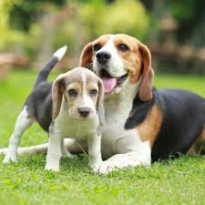
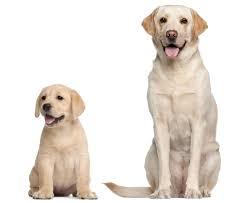
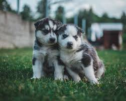
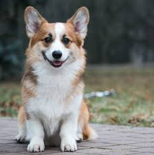

Home Page
Beagle

Small, compact, and hardy, Beagles are active companions for kids and adults alike. Canines of this dog breed are
merry and fun loving, but being hounds, they can also be stubborn and require patient, creative training techniques.
Their noses guide them through life, and they’re never happier than when following an interesting scent. Beagles
originally were bred as scenthounds to track small game, mostly rabbits and hare. They’re still used for this purpose
in many countries today, including the United States. But you’ll find plenty of these pups living as companion dogs and
loving, furry family members.
On its formation, the Association of Masters of Harriers and Beagles took over the running of a regular show at
Peterborough that had started in 1889, and the Beagle Club in the UK held its first show in 1896.[12] The regular
showing of the breed led to the development of a uniform type, and the beagle continued to prove a success up until
the outbreak of World War I when all shows were suspended. After the war, the breed was again struggling for survival
in the UK: the last of the Pocket Beagles was probably lost during this time, and registrations fell to an all-time low.
A few breeders (notably Reynalton Kennels) managed to revive interest in the dog and by World War II, the breed was once
again doing well. Registrations dropped again after the end of the war but almost immediately recovered.[16]
Labrador

The Labrador Retriever, often abbreviated to the Labrador, is a breed of retriever-gun dog from the United Kingdom that was developed from imported Canadian fishing dogs. The Labrador is one of the most popular dog breeds in a number of countries in the world, particularly in the western world.
A favourite disability assistance breed in many countries, Labradors are frequently trained to aid those with blindness or autism, act as a therapy dog, or perform screening and detection work for law enforcement and other official agencies.[1] The breed is best known for their obedience, loyalty, and playful composure. Additionally, they are prized as sporting and hunting dogs. Ancestors include a breed used in Newfoundland as fishing dogs, that would help in bringing in the fishing nets and retrieve fish that had gotten away.[2]
In the 1830s, the 10th Earl of Home and his nephews the 5th Duke of Buccleuch and Lord John Scott,[3][4] had imported progenitors of the breed from Newfoundland to Europe for use as gundogs. Another early advocate of these Newfoundland dogs, or Labrador Retrievers as they later became known, was the 2nd Earl of Malmesbury who bred them for their expertise in waterfowling.[3][4]
Husky

A husky is a sled dog used in the polar regions. One can differentiate huskies from other dog types by their fast pulling-style. They represent an ever-changing crossbreed of the fastest dogs[1] (the Alaskan Malamute, by contrast, pulled heavier loads at a slower speed).[2] Humans use huskies in sled-dog racing. Various companies have marketed tourist treks with dog sledges for adventure travelers in snow regions.[3] Huskies are also kept as pets, and groups work to find new pet homes for retired racing and adventure-trekking dogs
Nearly all dogs' genetic closeness to the gray wolf is due to admixture.[7] However, several Arctic breeds also show a genetic closeness with the now-extinct Taimyr wolf of North Asia due to admixture: the Siberian Husky and Greenland Dog (which are also historically associated with Arctic human populations) and to a lesser extent, the Shar Pei and Finnish Spitz. An admixture graph of the Greenland Dog indicates a best-fit of 3.5% shared material; however, an ancestry proportion ranging between 1.4% and 27.3% is consistent with the data and indicates admixture between the Taimyr wolf and the ancestors of these four high-latitude breeds.
This introgression could have provided early dogs living in high latitudes with phenotypic variation beneficial for adaption to a new and challenging environment, contributing significantly to the development of the husky. It also indicates that the ancestry of present-day dog breeds descends from more than one region.[8]
Corgi

A husky is a sled dog used in the polar regions. One can differentiate huskies from other dog types by their fast pulling-style. They represent an ever-changing crossbreed of the fastest dogs[1] (the Alaskan Malamute, by contrast, pulled heavier loads at a slower speed).[2] Humans use huskies in sled-dog racing. Various companies have marketed tourist treks with dog sledges for adventure travelers in snow regions.[3] Huskies are also kept as pets, and groups work to find new pet homes for retired racing and adventure-trekking dogs
Nearly all dogs' genetic closeness to the gray wolf is due to admixture.[7] However, several Arctic breeds also show a genetic closeness with the now-extinct Taimyr wolf of North Asia due to admixture: the Siberian Husky and Greenland Dog (which are also historically associated with Arctic human populations) and to a lesser extent, the Shar Pei and Finnish Spitz. An admixture graph of the Greenland Dog indicates a best-fit of 3.5% shared material; however, an ancestry proportion ranging between 1.4% and 27.3% is consistent with the data and indicates admixture between the Taimyr wolf and the ancestors of these four high-latitude breeds.
This introgression could have provided early dogs living in high latitudes with phenotypic variation beneficial for adaption to a new and challenging environment, contributing significantly to the development of the husky. It also indicates that the ancestry of present-day dog breeds descends from more than one region.[8]